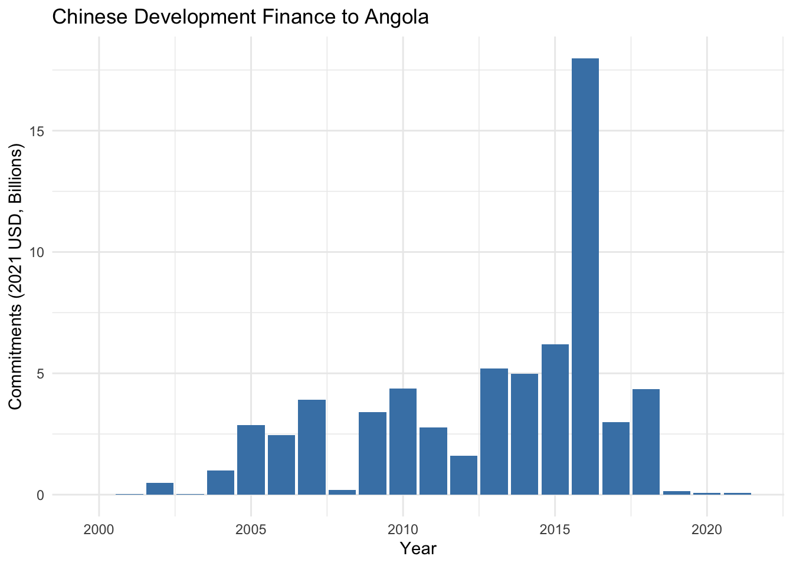
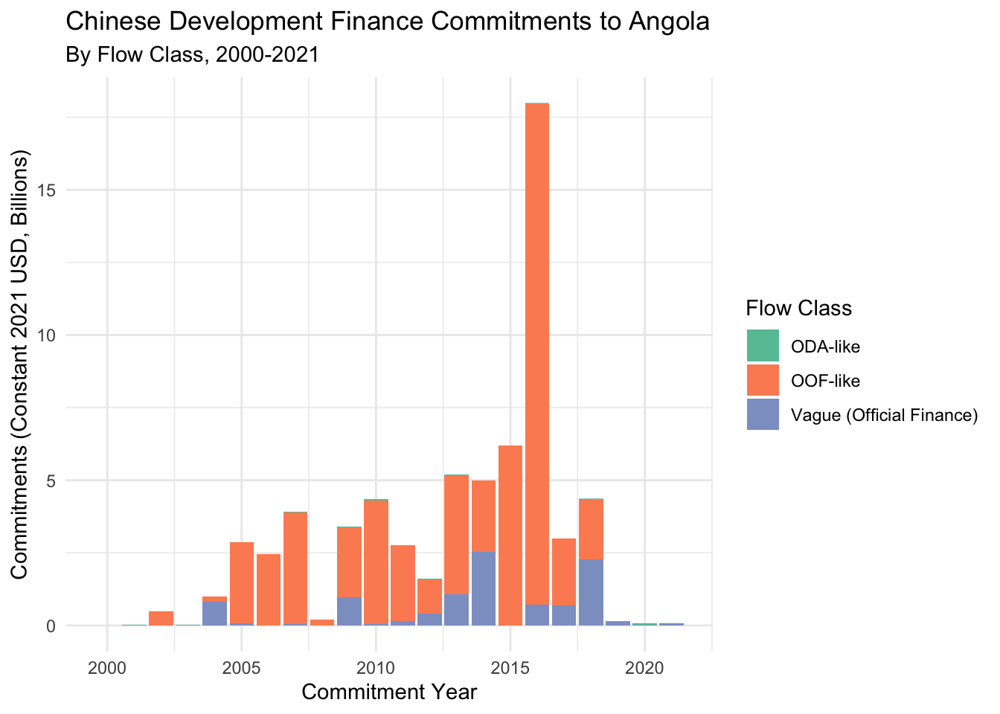
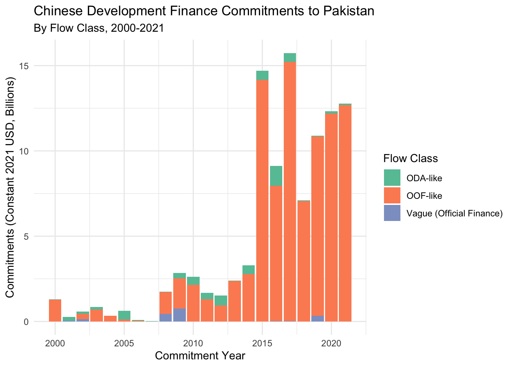
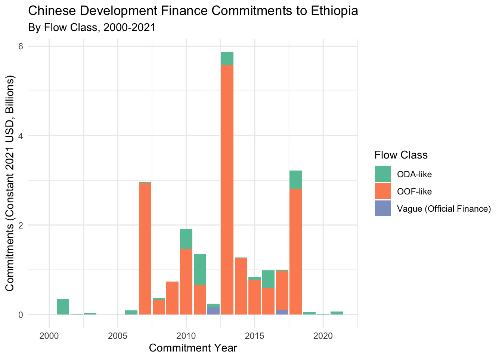
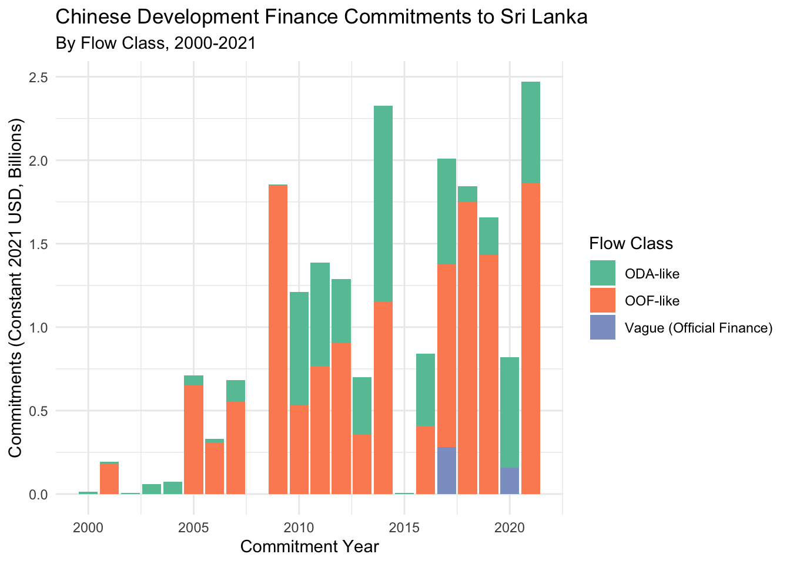
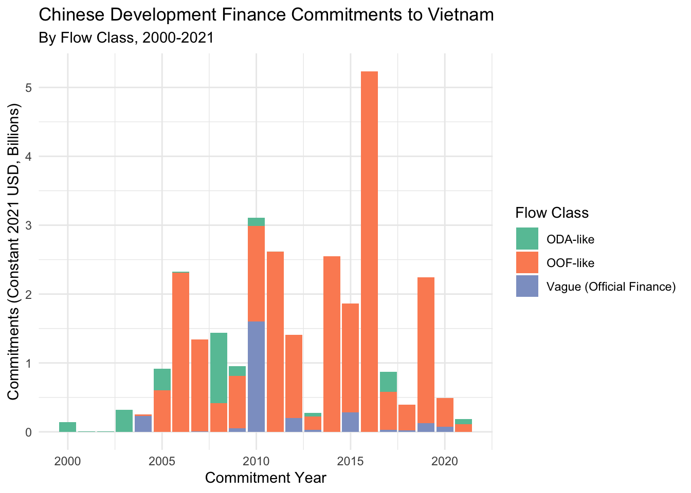
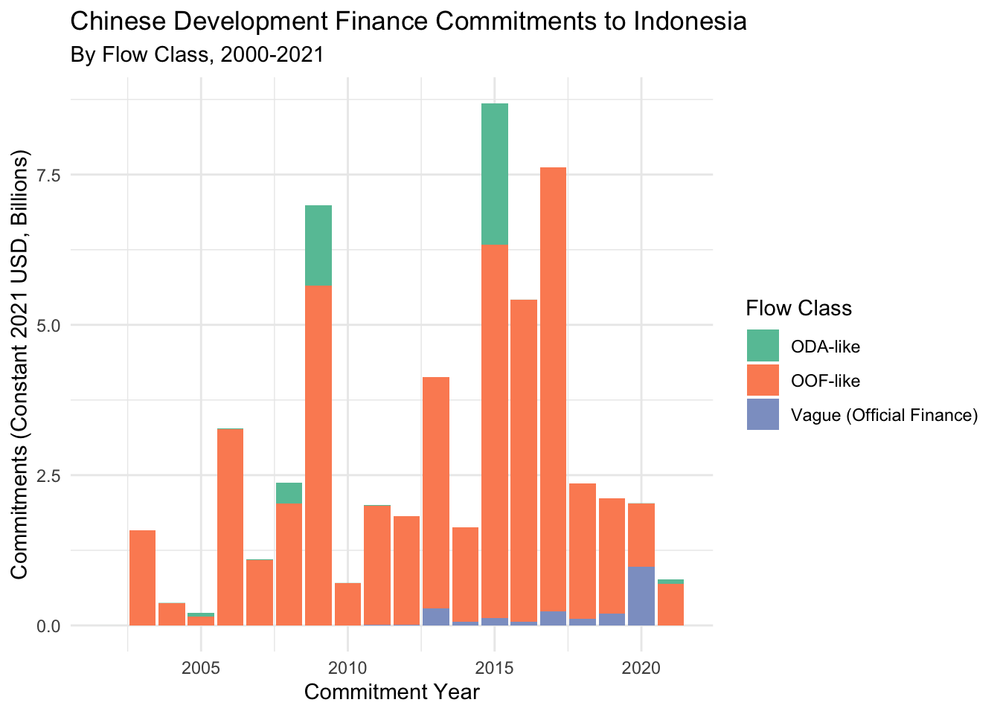
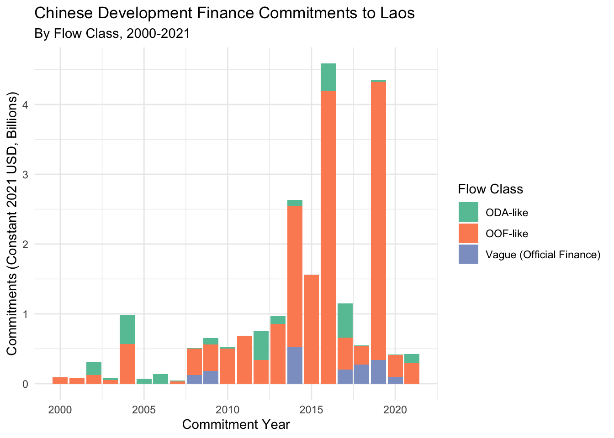

# Create week folders and their subfolders
for (week in 1:4) {
week_folder <- paste0("week_", week)
dir.create(week_folder)
# Create standard subfolders
dir.create(file.path(week_folder, "R")) # Scripts and Quarto documents
dir.create(file.path(week_folder, "data-raw")) # Original data files
dir.create(file.path(week_folder, "data")) # Processed data
dir.create(file.path(week_folder, "outputs")) # Generated reports and figures
}2 Week 1: Getting Started (In-Class)
2.1 Today’s Agenda (90 minutes)
- Welcome & Course Overview (15 min)
- Course logistics
- Learning approach
- Setting expectations
- Project Setup (20 min)
- Creating organized folder structure
- Installing key packages
- Understanding RStudio’s layout
- First Steps with R (25 min)
- Writing your first function
- Building analysis pipelines
- Creating visualizations
- Automated Reporting (25 min)
- Setting up report templates
- Generating multiple reports
- Hands-on practice
- Wrap-up & Preview (5 min)
- Review key takeaways
- Preview next week
- Additional resources
2.2 Welcome & Course Overview
Welcome to Applied Data Analysis for Chinese Lending Data! Before we dive into R, let’s cover some course logistics:
- Course Structure: 4 weekly online sessions + 1 full day in-person
- Online Sessions: 90 minutes each, combining instruction and hands-on practice.
- Materials: All course materials available in Quarto format
- Support: Using AI tools (Claude, ChatGPT) for learning assistance. Slack channel. 1x1 support for any cool projects you want to pursue.
- Questions: Ask questions anytime - no question is too basic!
2.3 Today’s Focus: Practical Tools for Real Work
At AidData, you spend countless hours analyzing development finance data and creating reports. Today’s session focuses on three key areas that will help make this work more efficient:
- Working in RStudio
- Get comfortable with the RStudio interface
- Understand how to organize your projects
- Learn where to find help when you need it
- Using Quarto for Better Documentation
- Keep track of your analysis process (like a lab notebook)
- Create professional-quality reports
- Combine code, text, and visualizations seamlessly
- Productivity-Enhancing Tools
- Write functions to avoid repetitive work
- Use map functions to process multiple countries efficiently
- Create parameterized reports that save time and reduce errors
2.4 Learning Objectives: First Steps Toward Efficiency
By the end of today’s session, you’ll begin to:
- Get Started with Automated Reports
- See how to transform manual reporting tasks into automated processes
- Create your first parameterized report template
- Understand how to generate reports for multiple countries
- Learn About Analysis Pipelines
- See how to make your analysis steps clear and reproducible
- Start building reusable analysis workflows
- Get introduced to tools for consistent results
- Take First Steps with Visualization
- Create your first plots in R
- See how to standardize visualizations across reports
- Understand how automated plotting can save time
- Start Working Smarter
- Begin reducing repetitive copy-paste work
- See how automation can prevent common errors
- Take first steps toward reproducible analysis
Most importantly, you’ll get hands-on experience with tools that can eventually save you hours of work each week. While mastering these tools takes time and practice, today you’ll see enough practical applications to understand their value. You’ll leave with working examples that you can build upon and adapt for your own work.
Think of today as learning to drive a car - you won’t be a race car driver after one lesson, but you’ll understand the basics and see why it’s worth learning more. As the course progresses, we’ll build on these foundations and develop your skills further.
Let’s get started!
2.5 Why “Cool Things First”?
Traditional programming courses often start with fundamentals: variables, loops, conditionals. That’s like learning about internal combustion before driving a car! Instead, we’ll:
- Start with exciting, practical applications
- Build motivation to learn fundamental concepts as we need them
- Use AI tools to help us understand the details and learn faster
Our goal is to show you what’s possible, then help you understand how it works.
2.6 Setting Up Your Work Environment
Let’s create an organized workspace for this course. We’ll do this together - follow along on your computer:
2.6.1 Creating a Project Structure
- In RStudio, click File → New File → New Project
- Click “New Directory”
- Click “New Project”
- Name it “data_analysis_bootcamp”
- Choose where to save it (remember this location!)
- Click “Create Project”
Now let’s create an organized folder structure. Copy and paste this code into your R console:
This will create:
data_analysis_bootcamp/
├── week_1/
│ ├── R/ # R scripts and Quarto documents
│ ├── data-raw/ # Original data files
│ ├── data/ # Processed data
│ └── outputs/ # Generated reports and figures
├── week_2/
│ ├── R/
│ ├── data-raw/
│ ├── data/
│ └── outputs/
├── week_3/
│ ├── R/
│ ├── data-raw/
│ ├── data/
│ └── outputs/
└── week_4/
├── R/
├── data-raw/
├── data/
└── outputs/
Tip
Use the Files pane in RStudio (bottom right) to verify that all folders were created correctly.
Each week’s folder has:
R/: Scripts and Quarto documentsdata-raw/: Original, unmodified datadata/: Processed, analysis-ready dataoutputs/: Generated reports, figures, and other results
For this week’s automated reporting project, we’ll use:
week_1/R/for our report template and functionsweek_1/data-raw/for any raw data we need to processweek_1/data/for cleaned, ready-to-analyze dataweek_1/outputs/for our generated reports
Note
You can also create folders using the Files pane in RStudio (bottom right) by clicking “New Folder”.
2.6.2 Install & Load Packages
Think of R packages like apps for your phone:
- You install an app once
- You open the app each time you want to use it
Similarly with R:
- You install a package once
- You load it with
library()each time you start R
There are two main “app stores” for R packages:
- CRAN: The official R app store. Like the Apple App Store or Google Play Store, packages here go through review and testing
- GitHub: More like downloading apps directly from developers’ websites. Newer features, but less formal review
Let’s install what we need:
# First, install pak - our package installer
install.packages("pak")
# Now use pak to install everything else
pak::pkg_install(
c(
"quarto", # For report generation
"t-emery/chinadevfin3", # From GitHub, GCDF 3.0 data package that I made
"glue", # For working with text
"tinytex", # For rendering pdfs
"here", # For relative file paths,
"withr", # For file system operations
"fs" # For file system operations
)
)
# Special setup needed for PDF creation
tinytex::install_tinytex()
# If you haven't installed tidyverse yet (from pre-class setup):
# pak::pkg_install("tidyverse") # Core data science tools from CRAN
Tip
The c() function combines things together. We’ll use it often!
Now let’s load the packages we’ll use:
library(tidyverse) # Load core tools── Attaching core tidyverse packages ──────────────────────── tidyverse 2.0.0 ──
✔ dplyr 1.1.4 ✔ readr 2.1.5
✔ forcats 1.0.0 ✔ stringr 1.5.1
✔ ggplot2 3.5.1 ✔ tibble 3.2.1
✔ lubridate 1.9.4 ✔ tidyr 1.3.1
✔ purrr 1.0.2
── Conflicts ────────────────────────────────────────── tidyverse_conflicts() ──
✖ dplyr::filter() masks stats::filter()
✖ dplyr::lag() masks stats::lag()
ℹ Use the conflicted package (<http://conflicted.r-lib.org/>) to force all conflicts to become errorslibrary(chinadevfin3) # Load GCDF 3.0 tools
library(glue) # Load text tools
library(here) # Load relative file pathshere() starts at /Users/teal_emery/Dropbox/DataScience/data_analysis_for_chinese_debt_data
Note
Don’t worry about the startup messages - they’re just telling us what was loaded.
2.7 Your First Analysis: A Preview
Before we dive into details, let’s see what we’re working toward. Copy and paste this code into RStudio:
# Get data for Angola
get_gcdf3_dataset() |>
filter(
recommended_for_aggregates == "Yes",
country_name == "Angola"
) |>
group_by(commitment_year) |>
summarize(
total_usd_bn = sum(amount_constant_usd_2021, na.rm = TRUE) / 10^9
) |>
ggplot(aes(x = commitment_year, y = total_usd_bn)) +
geom_col(fill = "steelblue") +
labs(
title = "Chinese Development Finance to Angola",
x = "Year",
y = "Commitments (2021 USD, Billions)"
) +
theme_minimal()
Don’t worry if this looks intimidating - by the end of today:
- You’ll understand what each part does
- You’ll be able to modify it for your needs
- You’ll know how to get AI help when stuck
Next, we’ll break this down into reusable pieces and learn how to automate it for any country!
2.8 Introduction to Quarto
Quarto is a modern scientific and technical publishing system built for the way we work today. Think of it as a powerful document creator that lets you combine your narrative (text), code, and results all in one place. When you make changes to your analysis, everything updates automatically - no more copying and pasting results into Word! You can write once and publish to multiple formats like HTML, PDF, Word, and presentations. It’s like having a Swiss Army knife for creating data-driven documents.
Getting Started Resources
- Follow along with the official Getting Started with Quarto in RStudio tutorial
- Keep the handy Quarto Cheatsheet nearby for quick reference
2.8.1 Why Use Quarto?
Quarto documents are:
- Reproducible: Code and results stay in sync
- Professional: Beautiful output in multiple formats
- Flexible: One source, many outputs
- Version-controlled: Easy to track changes
- Shareable: Others can see your code and results
2.8.2 Real-World Use Cases
Quarto shines in several different scenarios:
2.8.2.1 1. Lab Notebook / Exploratory Analysis
- Write text and execute code in the same document
- Track your thought process and decisions
- Document what worked (and what didn’t)
- Keep a record of your exploration
- This follows the tradition of “literate programming” introduced by Donald Knuth
Here’s an example of documenting your exploration:
## Question: Do loan commitments vary by region?
```{r}
# First, let's look at Africa
get_gcdf3_dataset() |>
calculate_yearly_commitments("Angola")
```
Interesting spike in 2016. Let's check another country...2.8.2.2 2. Professional Documents
- Turn your analysis directly into reports
- Create presentations
- Build websites and books
- Generate multiple formats from one source
In fact, this textbook itself is written in Quarto! You can see exactly how this page was created by looking at the source code on GitHub: week_1_in_class.qmd
This means:
- You can see how we practice what we preach
- You can learn from the actual code we use
- You have examples to reference for your own work
Tip
As you work through this course, try viewing the source code for different pages. It’s a great way to learn Quarto techniques!
2.8.3 Your First Quarto Document
- Click File → New File → Quarto Document
- Fill in:
- Title: “Week 1: Getting Started”
- Author: Your name
- Click “Create”
You’ll see a template document with some example content. Let’s modify it:
---
title: "Week 1: Getting Started"
author: "Your Name"
format:
html:
embed-resources: true # Makes HTML easily shareable
docx: default
pdf: default
---
Sharing HTML Documents
Using embed-resources: true ensures your HTML document can be shared and opened by anyone. The file will be a bit larger, but this is only noticeable when working with very large datasets. For most purposes, the convenience of easy sharing is worth it!
2.8.4 Basic Markdown
Markdown is a simple way to format text that’s easy to read and write. Think of it as a set of formatting shortcuts: instead of clicking buttons like in Word, you add special characters around your text. Here are the basics you’ll see in our example:
- Use
#for headers (more#means smaller headers) - Wrap words in
**bold**to make them bold - Wrap words in
*italics*to make them italics - Start lines with
-or numbers for lists
Try this example:
## About This Course
This course will teach me to:
- Create **beautiful** visualizations
- Write *efficient* code
- Generate professional reports
1. First, we'll learn about projects
2. Then we'll explore functions
3. Finally, we'll create visualizationsTry toggling between the Source and Visual editors at the top left of your RStudio window. The Visual editor shows formatting like Word, but we encourage using the Source editor to better understand how markdown works.
Tip
There’s much more you can do with markdown! Check out the Quarto Markdown Basics guide when you’re ready to explore.
2.8.5 Adding Code
A code chunk is like a special container in your document where you can write and run R code. Think of it as a mini R console embedded right in your document - anything between the ``` markers will be treated as R code, run by R, and the results will appear right below it. This lets you mix explanatory text with working code and see the results all in one place.
Click the “Insert” button or press Ctrl+Alt+I (Cmd+Option+I on Mac) to insert a code chunk:
```{r}
# Let's do a simple calculation
2 + 2
```To run this code, you have two easy options:
- Click the small green “play” button ▶️ in the top-right corner of the code chunk
- Use keyboard shortcuts:
- Windows/Linux: Ctrl+Shift+Enter to run the entire chunk
- Mac: Cmd+Shift+Enter to run the entire chunk
Tip
You can also run a single line by placing your cursor on that line and pressing:
- Windows/Linux: Ctrl+Enter
- Mac: Cmd+Enter
Save your Quarto document as week_1_in_class in the week_1/R folder. It will save your Quarto document with a .qmd extension.
2.8.6 Rendering Your Document
- Click the “Render” button
- Quarto will create three versions:
- HTML (great for web sharing)
- Word (for collaborating with non-R users)
- PDF (for formal documents)
2.8.7 Practice Time
- Add a section about what you hope to learn
- Insert a code chunk with a simple calculation
- Try different heading levels (## and ###)
- Add some bold and italic text
- Render to all formats
Tip
Keep this document! We’ll add to it throughout the class.
Next, we’ll start adding some real analysis to our document!
2.9 Let’s Start Building: Functions & Pipelines
Now that you’ve seen where we’re headed, let’s build this step by step. First, we’ll learn about two key concepts that make automation possible:
- Functions: Write code once, use it many times
- Pipes: Chain operations together clearly
Ready? Let’s dive in!
2.9.1 Introduction to Functions: Making Your Code DRY and Error-Free
One of the fundamental principles of data analysis is DRY: Don’t Repeat Yourself. When you find yourself copying and pasting the same code multiple times, it’s time for a function. Functions help us: - Write code once and reuse it many times - Reduce the chance of errors from copy-paste mistakes - Make our code more readable and maintainable
Let’s see this in action with a common task: making large numbers more readable.
# Without a function - repetitive and error-prone
1734483333 / 1000000000 # Convert to billions[1] 1.7344832847594938 / 1000000000 # Have to repeat the calculation[1] 2.8475955938273847 / 100000000 # Each repetition risks typos[1] 59.38274Spot the error above. It’s easy to make, and won’t always be as obvious to spot. Order of magnitude errors are surprisingly common, and quite embarrassing if you catch them afterwards.
Let’s work hard to be lazy (and accurate), and make a function to do this:
# With a function - write once, use many times
to_billions <- function(amount) {
amount / 10^9 # 10^9 = 1 billion, harder to mess up.
}
# Now it's easy and safe to convert any number
to_billions(1734483333) # Returns 1.73[1] 1.734483to_billions(2847594938) # Returns 2.85[1] 2.847595to_billions(5938273847) # Returns 5.94[1] 5.938274This simple function shows us two key ideas:
- Functions take an input and return an output
- Functions help us do repetitive tasks easily
2.9.2 Setting Up Our Analysis Tools
Now let’s set up some more powerful functions for analyzing development finance data. Copy and paste this code block into RStudio:
# Function to calculate yearly commitments for a country
calculate_yearly_commitments <- function(data, country) {
data |>
filter(
recommended_for_aggregates == "Yes",
country_name == country
) |>
group_by(
commitment_year,
flow_class
) |>
summarize(
amount_constant_usd_2021_bn = sum(
amount_constant_usd_2021,
na.rm = TRUE
) |>
to_billions(),
.groups = "drop"
)
}
# Function to create a visualization
plot_loan_commitments <- function(data, country) {
data |>
ggplot(
aes(
x = commitment_year,
y = amount_constant_usd_2021_bn,
fill = flow_class
)
) +
geom_col() +
labs(
title = str_glue("Chinese Development Finance Commitments to {country}"),
subtitle = "By Flow Class, 2000-2021",
x = "Commitment Year",
y = "Commitments (Constant 2021 USD, Billions)",
fill = "Flow Class"
) +
theme_minimal() +
scale_fill_brewer(palette = "Set2")
}Don’t worry about understanding all this code yet! We’ll break it down later.
2.9.3 Your First Analysis Pipeline
Now we can use these functions to analyze development finance:
# With pipes - clear and readable
get_gcdf3_dataset() |>
calculate_yearly_commitments(country = "Angola") |>
plot_loan_commitments(country = "Angola")
Let’s read this pipeline using “and then”:
- Get the GCDF dataset AND THEN
- Calculate yearly commitments for Angola AND THEN
- Create a plot showing those commitments
2.9.4 Why Pipes Make Life Easier
The pipe operator (|>) simply takes what comes before it and puts it into the first argument of what comes after it. It’s that simple! Here’s our analysis without pipes:
# Without pipes - like Excel formulas, hard to read and debug!
plot_loan_commitments(calculate_yearly_commitments(get_gcdf3_dataset(), country = "Angola"), country = "Angola")
See how much harder that is to read? You have to read from the inside out, just like those nested Excel formulas that give everyone headaches! The pipe makes our code read like a story - first we do this, then we do that, then we do the next thing.
A Tale of Two Pipes: |> vs %>%
R has two pipe operators that both do the same basic job - they help make code more readable by passing data through a sequence of functions:
|>is the native R pipe (added in R 4.1)%>%is the magrittr pipe (from the tidyverse)
Either works fine, but we recommend using the native pipe |> since it’s now built into R. You can set this as your default in RStudio under Tools → Global Options → Code → “Use native pipe operator”.
Keyboard shortcut for adding a pipe:
- Mac: Cmd+Shift+M
- Windows: Ctrl+Shift+M
2.9.5 Understanding Our Code with AI
Let’s use Claude or ChatGPT to understand our code better. Try these prompts:
- For our simple function:
"Can you explain how this function works?"
to_billions <- function(amount) {
amount / 10^9
}"- For understanding the pipeline:
"Can you explain what each step of this pipeline does?
get_gcdf3_dataset() |>
calculate_yearly_commitments(country = 'Angola') |>
plot_loan_commitments(country = 'Angola')"2.9.6 Understanding Complex Functions with AI
Now let’s look at a more sophisticated function. We’ll use AI to help us understand how it works:
Try this prompt with Claude, ChatGPT, or DeepSeek:
“I’m new to R and trying to understand this function. Could you explain what each line does in simple terms? Please be specific about what each function (like filter, group_by, and summarize) is doing with our data.
calculate_yearly_commitments <- function(data, country) {
data |>
filter(
recommended_for_aggregates == 'Yes',
country_name == country
) |>
group_by(
commitment_year,
flow_class
) |>
summarize(
amount_constant_usd_2021_bn = sum(
amount_constant_usd_2021,
na.rm = TRUE
) |>
to_billions(),
.groups = 'drop'
)
}2.9.7 Practice Time
Let’s try some analyses:
- Use
to_billions()with some large numbers - Modify the country in our pipeline to analyze different countries
- Use AI to help understand any patterns you see
Tip
When you see an interesting pattern in your visualization, paste a screenshot into your favorite LLM and ask: “Why might [country] show high commitments in [year]?”
This is a great way to test the limits of AI. As domain experts, you probably know exactly why commitments spiked in certain years. Compare what the AI says with your expert domain knowledge - you might be surprised by how often it makes confident but incorrect assertions! This is a valuable lesson in both the power and limitations of AI tools.
2.10 Work Smarter, Not Harder: Automating Repetitive Tasks with Map Functions
2.10.1 The Problem: Repetitive Analysis
Let’s say we want to analyze several countries. We could copy and paste our code:
# Analysis for Pakistan
get_gcdf3_dataset() |>
calculate_yearly_commitments("Pakistan") |>
plot_loan_commitments("Pakistan")
# Analysis for Ethiopia
get_gcdf3_dataset() |>
calculate_yearly_commitments("Ethiopia") |>
plot_loan_commitments("Ethiopia")
# Analysis for Sri Lanka...But this is: - Tedious to write - Easy to make mistakes - Hard to maintain - Not scalable (imagine doing this for 100 countries!)
2.10.2 A Better Way: Map Functions
Instead of repeating ourselves, we can tell R to do something for each item in a list. Here’s a simple example using our to_billions() function:
# Some amounts to convert
amounts <- c(1000000000, 2000000000, 3000000000)
# Instead of:
to_billions(amounts[1])[1] 1to_billions(amounts[2])[1] 2to_billions(amounts[3])[1] 3# We can just write:
map_dbl(
amounts, # The list of values we want to work with
to_billions # The function to apply to each value (no parentheses needed!)
)[1] 1 2 3The map_dbl() function:
- Takes a list of things (our amounts)
- Does something to each thing (applies to_billions)
- Returns a list of results
Map Functions vs For Loops
If you’ve programmed before, you might be familiar with for loops. Both map functions and for loops let you repeat tasks, but map functions are often clearer to read and harder to mess up. Compare these approaches:
```{r}
# For loop approach
results <- numeric(length(amounts)) # Have to pre-allocate
for(i in seq_along(amounts)) { # Need to manage indices
results[i] <- to_billions(amounts[i])
}
# Map approach
results <- map_dbl(amounts, to_billions) # Clear and concise
```Why tidyverse prefers map functions:
- They’re simpler to read and write
- They protect your data from accidental modifications (a common pitfall with for loops)
Map Functions Family
- We use
map_dbl()because we know we want numbers (doubles) back - There’s also
map()for general use,map_chr()for text, etc. - See the full purrr map documentation for more mapping functions
Tip
Notice that when we use to_billions in map_dbl(), we don’t include the parentheses. Think of it as giving R the recipe (the function) rather than the finished dish (the result of calling the function).
2.10.3 Analyzing Multiple Countries
Let’s apply this to our country analysis:
# List of countries we want to analyze
countries <- c("Pakistan", "Ethiopia", "Sri Lanka")
# First, let's make a function that does our whole analysis
analyze_country <- function(country) {
get_gcdf3_dataset() |>
calculate_yearly_commitments(country) |>
plot_loan_commitments(country)
}
# Now we can easily analyze any country
analyze_country("Sri Lanka")
# And we can use map to do many countries
# map(data to work with, function to apply)
plots <- map(
countries, # First argument: list of countries
analyze_country # Second argument: what to do with each country
)Let’s break down what’s happening:
- We create a list of countries
map()takes each country and…- Runs our analysis pipeline for that country
- Saves all the plots in a list
2.10.4 Why This Matters
This approach:
- Makes your code more concise and readable
- Reduces chances for error
- Makes it easy to add or remove countries
- Scales effortlessly (100 countries takes the same amount of code)
2.10.5 Practice Time
Let’s try some exercises:
- Basic mapping:
# Convert these amounts to billions
big_numbers <- c(1234567890, 9876543210, 5555555555)
map_dbl(big_numbers, to_billions)[1] 1.234568 9.876543 5.555556- Try with different countries:
# Analyze your own list of countries
your_countries <- c("Vietnam", "Indonesia", "Laos")
map(your_countries, analyze_country) # Simple and clear![[1]]
[[2]]
[[3]]
- Calculate total commitments:
# First, make a function for the calculation
get_total_commitments <- function(country) {
get_gcdf3_dataset() |>
calculate_yearly_commitments(country) |>
summarize(total = sum(amount_constant_usd_2021_bn)) |>
pull(total)
}
# Then use it with map_dbl
# map_dbl(data to work with, function to apply)
map_dbl(
your_countries, # First argument: list of countries
get_total_commitments # Second argument: what to do with each country
)[1] 28.94673 55.18729 21.56447
Getting Help from AI
Try this prompt to understand map functions better:
"I'm new to R and trying to understand this code. Can you explain what map_dbl does and how it's different from a regular for loop?
```{r}
amounts <- c(1000000000, 2000000000, 3000000000)
map_dbl(amounts, to_billions)
```2.10.6 Next Steps
Now that we can easily work with multiple countries at once, we’re ready to learn how to generate automated reports. The same principles we just learned about doing things repeatedly will help us create professional reports for any country with just a few lines of code!
2.11 Creating Reports for Multiple Countries
2.11.1 The Problem: Manual Report Creation
Imagine your boss asks for reports on Chinese development finance in:
- All countries in Southeast Asia
- Every country with commitments over $1 billion
- The top 10 recipient countries
Without automation, you’d need to:
- Copy your Quarto template
- Change the country name in multiple places
- Render each report separately
- Keep track of all the files
Let’s automate this!
2.11.2 Step 1: Save Our Functions
First, let’s save our functions in week_1/R/functions.R:
# week_1/R/functions.R
# Convert to billions for readability
to_billions <- function(amount) {
amount / 10^9
}
# Calculate yearly commitments for a country
calculate_yearly_commitments <- function(data, country) {
data |>
filter(
recommended_for_aggregates == "Yes",
country_name == country
) |>
group_by(
commitment_year,
flow_class
) |>
summarize(
amount_constant_usd_2021_bn = sum(
amount_constant_usd_2021,
na.rm = TRUE
) |>
to_billions(),
.groups = "drop"
)
}
# Create visualization
plot_loan_commitments <- function(data, country) {
data |>
ggplot(
aes(
x = commitment_year,
y = amount_constant_usd_2021_bn,
fill = flow_class
)
) +
geom_col() +
labs(
title = str_glue("Chinese Development Finance Commitments to {country}"),
subtitle = "By Flow Class, 2000-2021",
x = "Commitment Year",
y = "Commitments (Constant 2021 USD, Billions)",
fill = "Flow Class"
) +
theme_minimal() +
scale_fill_brewer(palette = "Set2")
}2.11.3 Step 2: Create a Report Template
Now create a new file called week_1/R/country_report.qmd:
---
title: "Chinese Development Finance in `{r} params$country`"
author: "Your Name"
date: today
format:
html:
theme: cosmo
toc: true
embed-resources: true
params:
country: "Angola" # Default country
---
Tip
The params: section is like fill-in-the-blanks for our report. We can change these values when we render the report.
Add this content to the report template:
```{r}
#| label: setup
#| include: false
# Load required packages
library(tidyverse)
library(chinadevfin3)
library(glue)
library(here)
# Load our functions
source(here::here("week_1", "R", "functions.R"))
```
## Overview
This report analyzes Chinese development finance commitments to `{r} params$country`.
## Visualization
```{r}
#| label: commitments-plot
get_gcdf3_dataset() |>
calculate_yearly_commitments(params$country) |>
plot_loan_commitments(params$country)
```
## Summary Statistics
```{r}
#| label: summary-stats
commitments <- get_gcdf3_dataset() |>
calculate_yearly_commitments(params$country)
total_commitment <- commitments |>
summarize(total = sum(amount_constant_usd_2021_bn)) |>
pull(total) |>
round(2)
```
Total commitments to `{r} params$country` from 2000-2021:
$`{r} total_commitment` billion (2021 USD)
The
{here} Package: Making File Paths Work Everywhere
Ever tried opening someone else’s R project and gotten errors like “file not found” even though you can see the file right there? This happens because of absolute file paths like:
- Windows:
"C:/Users/YourName/Documents/Project/data.csv" - Mac:
"/Users/YourName/Documents/Project/data.csv"
These paths only work on the original computer! Even relative paths like "../data/file.csv" can break if you:
- Open your project from a different folder
- Share your code with colleagues
- Move your files around
The {here} package solves this by:
- Automatically finding your project root folder
- Building file paths that work everywhere
Instead of:
source("../R/functions.R") # Fragile!Use:
source(here::here("week_1", "R", "functions.R")) # Robust!This works regardless of:
- What computer you’re on
- Where you opened the project
- What your working directory is
2.11.4 Step 3: Create a Rendering Script
Create a new file called week_1/R/render_reports.R:
# week_1/R/render_reports.R
library(tidyverse) # For data manipulation and pipe operator
library(quarto) # For rendering Quarto documents
library(here) # For reliable file paths
library(withr) # For safe working with file paths
library(fs) # For file system operations
# List of countries to analyze
sea_countries <- c(
"Vietnam",
"Indonesia",
"Thailand",
"Malaysia"
)
# Function to render a report for one country
render_country_report <- function(country) {
# Create output directory if it doesn't exist
output_dir <- here::here("week_1", "outputs")
dir_create(output_dir)
# We'll use withr::with_dir() instead of setwd()
# It automatically restores the working directory when done
withr::with_dir(
here::here("week_1", "R"),
{
# Render the Quarto document
quarto::quarto_render(
input = "country_report.qmd",
output_file = str_glue("{country}_analysis.html"),
execute_params = list(country = country)
)
# Move the rendered file to outputs directory
file_move(
path = str_glue("{country}_analysis.html"),
new_path = path(output_dir, str_glue("{country}_analysis.html"))
)
}
)
}
# Create a safer version of our render function that won't error
safe_render <- possibly(
render_country_report,
otherwise = "Failed to render report" # What to return if there's an error
)
# Generate reports and capture results
results <- map(
sea_countries,
safe_render
)
# Check for any failures
failed_countries <- sea_countries[results == "Failed to render report"]
if (length(failed_countries) > 0) {
message("Failed to render reports for: ", str_c(failed_countries, collapse = ", "))
}2.11.5 Step 4: Generate Reports
- Open
week_1/R/render_reports.Rin RStudio - Click “Source” (or press Cmd/Ctrl + Shift + S)
- Check
week_1/outputs/for your generated reports!
You should see:
vietnam_analysis.htmlindonesia_analysis.htmlthailand_analysis.htmlmalaysia_analysis.html
2.11.6 Real-World Applications
This approach is incredibly powerful for:
- Regular Reporting
- Weekly/monthly/quarterly updates
- Reports for different stakeholders
- Country monitoring
- Ad Hoc Analysis
- Quick responses to specific requests
- Comparative analysis across regions
- Deep dives into specific countries
- Quality Control
- Consistent analysis across reports
- Easy to spot unusual patterns
- Reproducible results
2.11.7 Practice Time
Let’s try some exercises:
- Add a new visualization to
country_report.qmd - Generate reports for a different set of countries
- Add more summary statistics to the report
File Organization
Remember:
- R scripts and Quarto documents go in
R/ - Generated reports go in
outputs/ - Use relative paths (like
"R/functions.R"and"../outputs/")
2.12 Wrapping up: The Cool Things First Approach
The data science workflow typically follows these steps:
- Get Data: Import and clean your data
- Transform Data: Calculate summaries and find patterns
- Communicate: Create visualizations and reports
Look at our analysis pipeline:
get_gcdf3_dataset() |> # Step 1: Get Data
calculate_yearly_commitments("Angola") |> # Step 2: Transform
plot_loan_commitments("Angola") # Step 3: Communicate
But here’s the twist: we’re learning these steps in reverse! Why?
- Week 1 & 2: Communication (Reporting & Data Visualization)
- Because seeing your results is exciting!
- Creates motivation to learn the underlying steps
- Week 3: Data Transformation
- Now that we know what we want to show, we’ll learn how to wrangle data into shape
- Find actionable insights from dirty real world data
- Week 4: Data Import & Cleaning
- The foundation of all good analysis
- LLMs make data cleaning much easier
graph TB
%% Standard Workflow
subgraph Traditional["Data Science Workflow"]
A("Get Data<br>(Import & Clean)") --> B("Transform Data<br>(Analyze & Summarize)")
B --> C("Communicate<br>(Visualize & Report)")
end
%% Our Learning Path
subgraph Course["Our Learning Path"]
direction TB
W1("Week 1:<br>Introduction to Quarto<br>(Professional Reports)")
W2("Week 2:<br>Data Visualization<br>(The Fun Part!)")
W3("Week 3:<br>Data Transformation<br>(Making Data Useful)")
W4("Week 4:<br>Data Import & Cleaning<br>(Building Strong Foundations)")
W1 --> W2
W2 --> W3
W3 --> W4
end
%% Connecting arrow with explanation
C -..-> W1
%% Styles for better visualization - now with fill colors
style A fill:#fff3e0,stroke:#f57c00,stroke-width:2px
style B fill:#e3f2fd,stroke:#1976d2,stroke-width:2px
style C fill:#e8f5e9,stroke:#2e7d32,stroke-width:2px
style W1 fill:#e8f5e9,stroke:#2e7d32,stroke-width:2px
style W2 fill:#e8f5e9,stroke:#2e7d32,stroke-width:2px
style W3 fill:#e3f2fd,stroke:#1976d2,stroke-width:2px
style W4 fill:#fff3e0,stroke:#f57c00,stroke-width:2px
This cool things first approach helps you:
- See the value of R immediately
- Build motivation through quick wins
- Understand why each step matters
- Provides the motivation to learn the details of why code works
2.13 Wrapping Up: What We’ve Accomplished
2.13.1 Today’s Achievements
Let’s look back at what we’ve accomplished in just 90 minutes:
- Getting Comfortable with RStudio
- Set up an organized project structure
- Learned to navigate the RStudio interface
- Created our first R scripts and Quarto documents
- Taking First Steps with Quarto
- Created our first Quarto document
- Combined code, text, and visualizations
- Generated reports in multiple formats
- Building Efficiency Tools
- Wrote our first function to avoid repetitive work
- Used map functions to process multiple countries
- Created a parameterized report template
Most importantly, you’ve seen how these tools can make your work at AidData more efficient and reproducible. While it takes time to master these skills, you now have working examples that you can build upon and adapt for your own analysis needs.
2.13.2 Resources for Continued Learning
2.13.2.1 R Fundamentals
Even with AI assistance, a solid foundation in R basics will make you much more effective. Here are some excellent starting points:
- Interactive Learning
- DataCamp’s Free Introduction to R
- Recommended starting point
- Covers essential R concepts
- Interactive exercises with immediate feedback
- DataCamp’s Free Introduction to R
- Video Tutorial
- R Programming Crash Course (1 hour)
- Quick overview of key concepts
- Good for visual learners
- Covers most common operations
- R Programming Crash Course (1 hour)
2.13.2.2 Quarto Documentation & Tutorials
- Official Resources
- Quarto Documentation
- Comprehensive reference
- Many examples and tutorials
- Getting Started with Quarto (Video)
- Excellent visual introduction
- Shows Quarto in action
- Quarto Documentation
- Book Chapters
- R for Data Science (2e):
2.13.2.3 Functions & Iteration
- R for Data Science Chapters
- Writing Functions
- Comprehensive guide to function writing
- Best practices and examples
- Iteration
- Deep dive into map functions
- Practical examples
- Writing Functions
- Additional Resources
- purrr documentation
- Reference for map functions
- Comprehensive examples
- Walk This Way: A gentle introduction to purrr
- Beginner-friendly blog post
- Clear explanations and examples
- purrr documentation
2.13.3 Next Steps
- Practice with Your Own Data
- Try modifying today’s examples for your specific needs
- Start small - maybe automate one regular task
- Use AI tools to help understand and adapt code
- Prepare for Next Week
- We’ll dive deeper into data visualization
- Focus on creating compelling graphics for Chinese development finance data
- Build on the foundations we’ve established today
- Get Help When Needed
- Use AI tools (Claude, ChatGPT) for code explanation
- Reference the resources above
- Ask questions in our course forum
- Share challenges and solutions with colleagues
Remember: Learning R is a journey. You don’t need to memorize everything - knowing where to find help is often more important than memorizing syntax. Focus on understanding the concepts and how they can make your work easier and more reproducible.
See you next week!